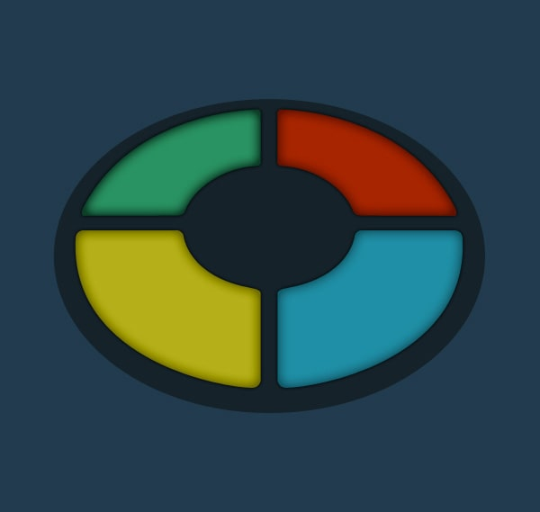

- Slide the ON/OFF switch to ON, the Game Selector switch to "1" and the Skill Level switch to 1,2, 3 or 4.
- Press the START button. Simon will give the first signal. Repeat the signal by pressing the same color lens.
- Simon will duplicate the first signal and add one. Repeat these two signals by pressing the same color
lenses, in order.
- Simon will duplicate these first two signals and add one.
- Continue playing as long as you can repeat each sequence of signals correctly. After the 5th, 9th and 13th
signals in a sequence, Simon automatically speeds up.
- If you fail to repeat a sequence exactly, Simon responds with a "RAZZ" sound. This means you've lost, and the sequence of signals ends.
|

|